Hi-Dog: ESP32-C3 AI机器狗
项目简介 Features & Desc.

Hi-Dog 是一款基于 ESP32-C3 的 AI 对话机器狗。硬件分为 ESP32 主控板和外设扩展板 2 块 PCB，分别实现 MCU 核心功能和电池供电、舵机控制。通过接入小智 AI 大语言模型，实现对话聊天功能，支持唤醒词，借助板载的 0.96 寸彩屏用于显示表情；内置水银开关（选配）可以感知晃动的速率，从而实现唤醒 / 打断对话 / 执行动作等。
Hi-Dog 通过 USB Type-C 接口连接舵机底座后，就可以作为一只 AI 机械狗，利用 4 个舵机完成不同的动作。此外，机械狗底座集成了电池管理模块，控制锂电池充放电以及 ESP32 的 5V 升压供电。
Hi-Dog 还支持网页控制，在网页端远程遥控机械狗前进后退左转右转，以及 12 种预设动作。并支持在网页端进行舵机调平。
装配步骤 Typical Installation
在本体装配前请准备以下材料：
| 序号 | 描述 |
|---|---|
| 1 | 3D 打印零件 |
| 2 | M2*4mm 自攻螺丝 |
| 4 | ESP32-C3 MainBoard |
| 5 | 2014B 扬声器 |
| 6 | 打印面板 |
在机器狗底座装配前请准备以下材料：
| 序号 | 描述 |
|---|---|
| 1 | 3D 打印零件 |
| 2 | 4 个 180 度 SG92R 舵机 |
| 4 | ServoDogBoard |
| 5 | 702040 500mAh 锂离子电池 |
| 6 | 数颗 M2 螺丝和舵机自带螺丝包 |
注意事项：打板请选择板厚 1.2mm
Hi-Dog 本体装配
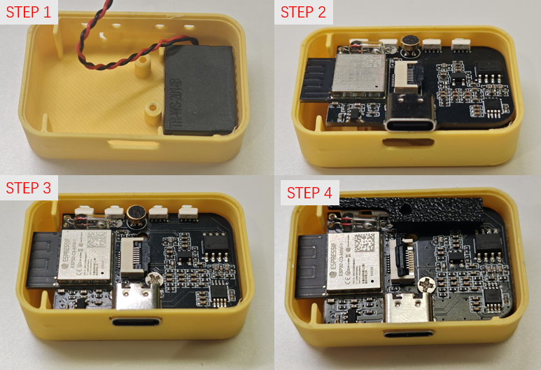
Hi-Dog 本体结构件较少，安装时先将扬声器固定在结构件上，然后将 PCB 固定到打印外壳上。天线与外壳的距离很近，先将左侧和顶部嵌入外壳中，然后利用 3D 打印外壳韧性将 USB 口放入外壳中。
由于 PCB 和打印面板间还有较大的空隙，因此必须使用遮光消噪结构件来降低麦克风拾音噪声。显示屏需要粘贴在亚克力面板上，为避免徒手贴歪，推荐先将屏幕固定到治具上，然后粘贴屏幕并取下。
Hi-Dog 底座安装
1) 装入 PCB、锂电池和舵机
将 PCB 板，锂电池和 4 个舵机依次装入底部外壳。舵机接口定义按主控板为正前方从左到右分别为 Signal, VCC, GND。
需要注意：装配舵机时，舵机的引脚顺序别接错了，请按照 PCB 板上的丝印标号进行插接。
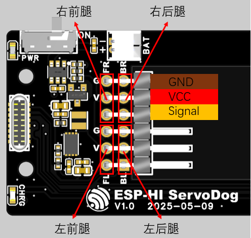
ServoDogBoard 引脚定义
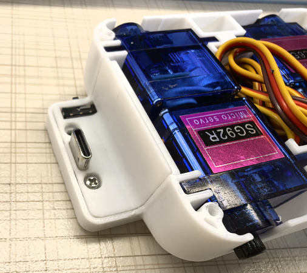
底座内部装配示意
2) 装上前盖板和上盖板
装上 Type-C 前盖板和外壳上盖板。
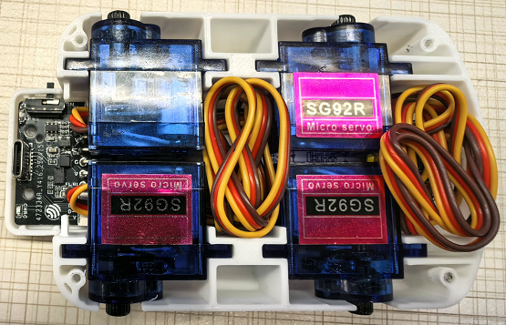
3) 固定舵臂到 3D 打印腿
将舵机配件包里最小的舵臂用最小的螺丝固定在 3D 打印腿上。
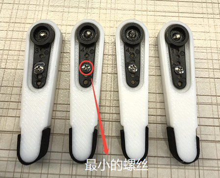
4) 安装腿部，大功告成！
将腿装在舵机上，并用螺丝进行固定。大功告成！
固件烧录
基础固件已打包在附件中（Factory_bin.bin），烧录地址为 0x00。烧录步骤如下：
- 按住或短接设备顶部 Boot 按钮。
- 上电设备，使 ESP32-C3 进入下载模式。
- 烧录完成后，松开 Boot 按钮，重新上电即可运行程序。
小智固件需要下载 xiaozhi-esp32 仓库，并调用下面语句进行 ESP-HI 小智固件编译（要求 Python 3 环境）：
python3 scripts/release.py esp-hi舵机校准
Hi-Dog 进行舵机校准首先要进入 Servo Dog 网页控制：
- 首先将 ESP-HI 进行小智配网。
- 手机 / PC 连接到同一 Wi-Fi 下。
- 在浏览器中访问
http://esp-hi.local/进入网页后台。 - 进入舵机校准模式，点击屏幕上的 4 个舵机按钮微调舵机角度，直到 4 条腿和身体都在同一平面上。
校准前务必阅读网页端舵机校准说明。
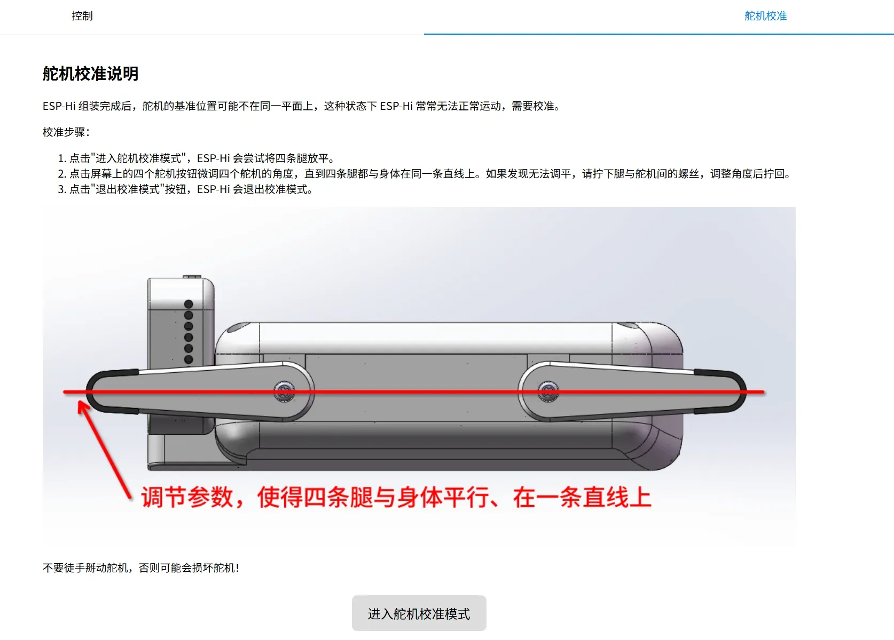
3D 模型结构 Constructure
Hi-Dog 本体
Hi-Dog 本体采用层叠式设计，本体由一块 1.2mm 主控板 PCB、两个 3D 打印结构件（一个外壳、一个遮光消噪结构件）、一块正面 1mm 亚克力面板组成。
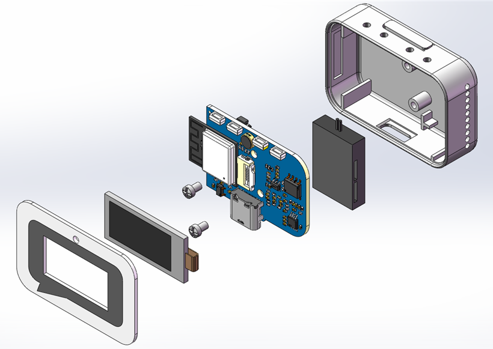
Hi-Dog 机器狗底座
Hi-Dog 机器狗底座由一块 PCB 扩展板、4 个 3D 打印零件、一块 702040 500mAh 锂离子电池、4 个 180° SG92R 舵机组成。3D 结构爆炸图如下。
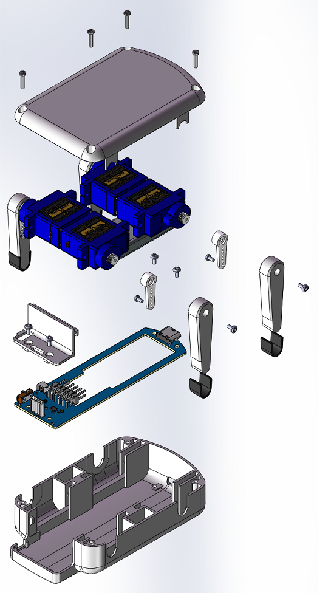
硬件电路设计 Electronic Design
本体电路
Hi-Dog 硬件部分主要包含电源管理、MCU、音频、显示和舵机机械狗五个部分，总体硬件框图如下：
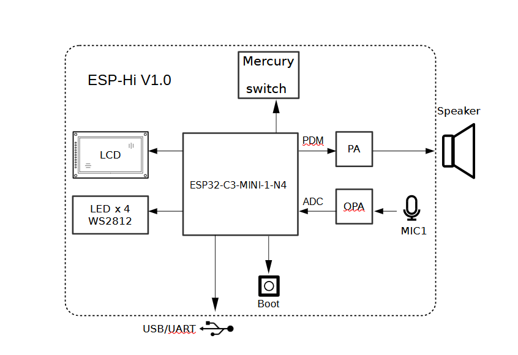
供电方式
Hi-Dog 使用 USB Type-C 供电，使用 RT9013 将电压降低为 3.3V 电压供 MCU 与音频使用。由于 ESP32-C3 Wi-Fi 发包时瞬态电流较高，可能会影响麦克风音频播放与拾音效果，因此推荐使用负载调整率尽可能低的 LDO 或者 DCDC 芯片。为了防止电源噪声引入麦克风端，需要添加额外低通滤波电路分离麦克风与 MCU 电源轨。
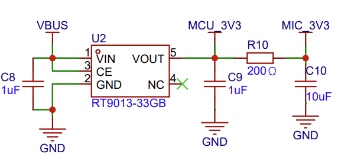
音频 — 拾音部分
拾音部分采用驻极体咪头作为拾音设备，使用跨阻抗放大器将驻极体麦克风的输出电流转换为输出电压，经过电阻偏置后送到 ESP32 的 ADC。由于 ESP32-C3 的电压采集范围约 0~1V，放大倍数请根据所选用咪头实际的灵敏度调整 R18。
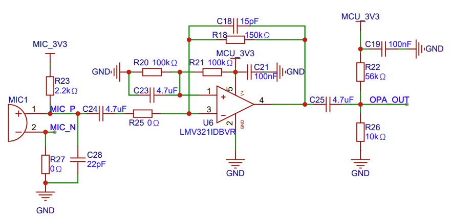
音频 — 发声部分
发声部分采用 I2S-PDM 信号直出，为了避免 Wi-Fi 传输对输出信号的干扰，采用差分的方式进行传输。经过 RC 滤波后经音频运放 NS4150B 放大输出，输出的放大倍数设定为 7.2 倍。
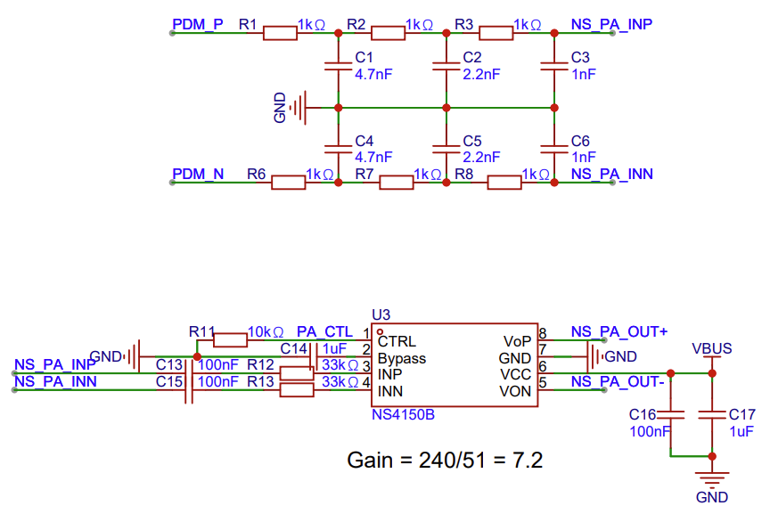
底座电路
舵机机械狗底座由四个舵机构成，同时集成了电池管理功能，舵机控制线通过 USB-C 直连到 Hi-Dog 本体。舵机由电池直接供电，底座对本体供电由电池电压泵升到 5V，从而避免了舵机在执行动作时，电池电压波动对系统的影响。底座硬件框图如下：
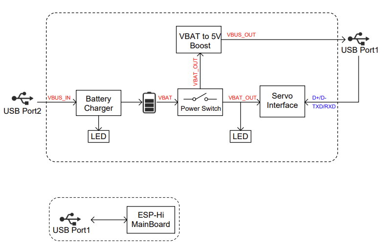
电池升压
由于舵机直接由电池进行供电，为防止舵机工作时电压不稳定影响 Hi-Dog 本体的正常工作，需要将电池电压升压至 5V 后再供给 Hi-Dog 本体，升压电路如下：
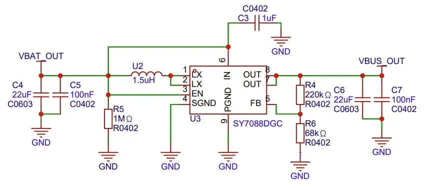
电源开关
舵机工作时电流较大，尤其是 4 个同时工作时，而额定工作电流大的拨动开关体积都偏大，无法满足机器狗的结构设计。因此，在本项目中采用小开关和一个 MOS 组合的开关电路，具体电路如下：
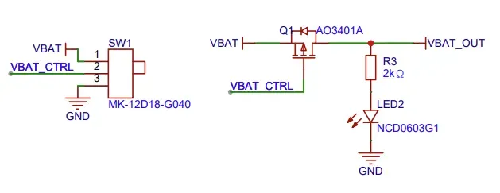
物料清单 BOM
Hi-Dog 主控板 主要物料清单
- 8 欧 1 瓦 2014B 方形腔体喇叭
- 4*1.5mm 麦克风
- 0.96 寸 TFT 京东方插接式胶铁一体
Hi-Dog 扩展板 主要物料清单
- 702040 聚合物锂电池
- 180 度 SG92R 舵机
- 公头 Type-C 贴片插头 TC-005
已知问题
- 当前麦克风的位置在打印件内，容易因空腔声音振荡导致音质变差，如果想取得最佳的拾音效果，麦克风推荐直接粘贴在前面板上，然后使用线连接到 PCB 上。
- 舵机底板 USB CC1/CC2 线需要分别接一个 5.1K 电阻对地。否则使用 USB C-C 的线无法正常充电。
实物展示
Rick Chou | ale211@foxmail.com
Reference: https://oshwhub.com/esp-college/esp-hi